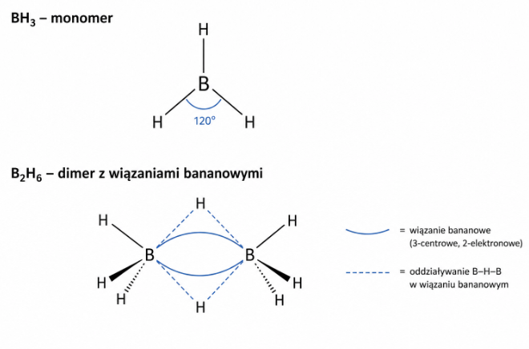
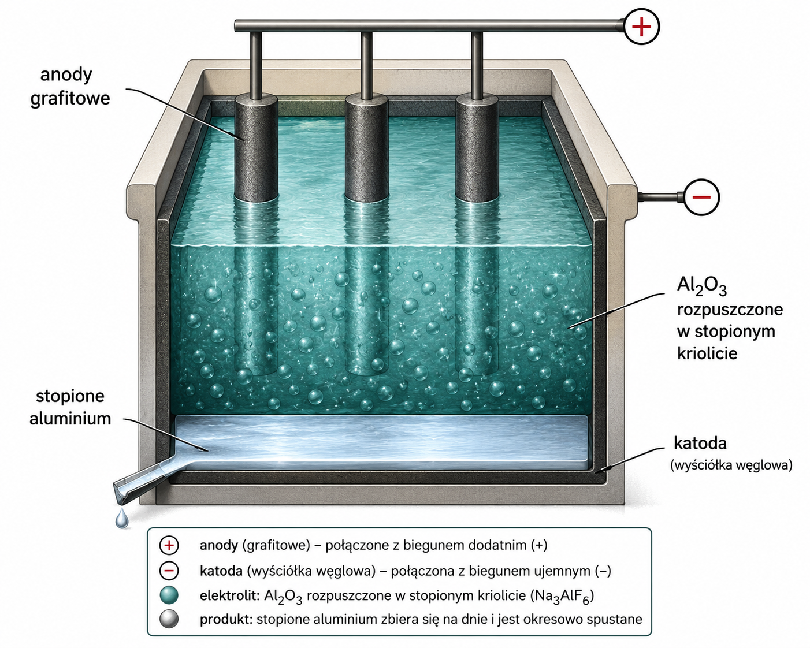
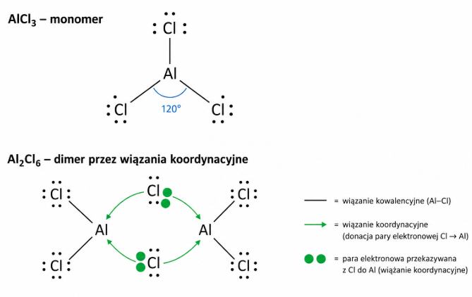
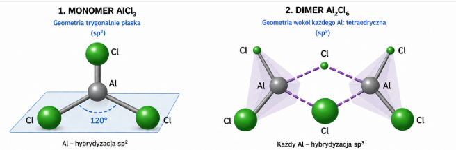

Bor występuje w skorupie ziemskiej w postaci minerałów takich jak borany. Najbardziej popularnym jest boraks \(Na_{2}B_{4}O_{7}\) oraz kwas borowy \(H_{3}BO_{3}\) .
Czysty bor otrzymywany jest przez redukcję metalem aktywnym, najczęściej magnezem tlenku boru:
\[B_{2}O_{3} + 3Mg \rightarrow 3MgO + 2B\]
Redukcję bromku boru:
\[2BBr_{3} + 3H_{2} \rightarrow 2B + 6HBr\]
Oraz rozkład termiczny jodku boru:
\[2BI_{3} \rightarrow 2B + 3I_{2}\]
Bor jest jedynym niemetalem w 13 grupie układu okresowego. Posiada wiele odmian alotropowych. Odmiany amorficzne w
postaci brązowego proszku lub czarnego szkliwa oraz krystaliczne czarne o wysokiej twardości (9 w skali Mohsa) kryształy
odporne chemicznie . Ma silną tendencję do tworzenia wiązań kowalencyjnych. Jego wyjątkowo złożona chemia strukturalna wynika z konfiguracji elektronowej powłoki walencyjnej \(2s^{2}2p^{1}\) , która daje o jeden elektron walencyjny mniej, niż liczba orbitali w powłoce walencyjnej. Proste związki takie jak mają niepełny oktet elektronowy i są silnymi kwasami Lewisa . Bor
kompensuje sobie niedobór elektronów tworząc klastry z wiązaniem wielocentrowym.
Bor w temperaturze pokojowej jest bierny chemicznie, reaguje z tylko z fluorem oraz kwasem azotowym:
\[2B + 3F_{2} \rightarrow 2BF_{3}\]
\[B + 3HNO_{3}^{stez} \rightarrow H_{3}BO_{3} + 3NO_{2}\]
W reakcji prowadzonej w podwyższonej temperaturze boru z tlenem otrzymujemy tlenek boru:
\[4B + 3O_{2} \rightarrow B_{2}O_{3}\]
Bor w przeciwieństwie do I i II grupy nie tworzy nadtlenków i ponadtlenków. Tlenek boru klasyfikowany jest jako tlenek kwasowy, jednak reaguje z tylko zasadami, nie reaguje z wodą i kwasami. Dodatkowo powstają nietypowe aniony kwasu borowego \(B(OH)_{4}^{-}\)
\[B_{2}O_{3} + 2NaOH + 4H_{2}O \rightarrow 2Na\lbrack B(OH)_{4}\rbrack\]
W podwyższonej temperaturze bor reaguje również z azotem, dając azotek boru – związek o ciekawej strukturze, analogicznej do grafitu, nazywany czasem jest białym grafitem
\[2B + N_{2} \rightarrow \lbrack BN\rbrack_{n}\]
Chemia związków boru z wodorem – boranów jest bardzo złożona i wykracza znacznie poza poziom matury, a nawet kursu chemii na studiach. Związki te otrzymywane są przez działanie wodorkiem metalu aktywnego na związek boru z halogenem:
\[3NaH + BCl_{3} \rightarrow BH_{3} + 3NaCl\]
Podstawowy przedstawiciel szeregu \(BH_{3}\) występuje jako dimer chcąc uniknąć niepełnego obsadzenia orbitali walencyjnych. W tym celu uwspólnia między sobą elektrony stanowiące wiązanie B-H wraz z atomem wodoru.

Proces taki nazywa się utworzeniem wiązania bananowego albo inaczej trójcentrowego dwuelektrodowego. Ten rodzaj wiązania wstępuje praktycznie we wszelkich boranach, dodatkowo możliwe jest utworzenie wiązania bor – bor, co dodatkowo komplikuje ilość możliwych połączeń w boranach. Wodorki boru są silnymi reduktorami, z uwagi na polaryzację wiązania bor – wodór. Wodór w tych związkach jest obdarzony ładunkiem ujemnym, co powoduje zajście reakcji synproporcjonacji ze związkami zawierającymi wodór na dodatnim stopniu utlenienia, takimi jak woda lub \(HCl\)\[BH_{3} + 3H_{2}O \rightarrow B(OH)_{3} + 3H_{2}\]
\[BH_{3} + 3HCl^{gaz} \rightarrow BCl_{3} + 3H_{2}\]
Podczas reakcji z amoniakiem powstaje borazyna – borowo azotowy analog benzenu
\[3NH_{3} + 3BH_{3} \rightarrow B_{3}N_{3}H_{6}\]
Borowodór może również reagować z wodorkami metali aktywnych – przyłącza wówczas anion wodorkowy w swoją strefę koordynacyjną, tworząc jon \(BH_{4}^{-}\)
\[NaH + BH_{3} \rightarrow NaBH_{4}\]
Związki tego typu mają budowę jonową i używane są jako reduktory w chemii organicznej.
Bor tworzy szereg kwasów borowych, podstawowy z nich kwas borny ma wzór \(H_{3}BO_{3}\) . Jest on nietypowym kwasem, który nie ma właściwości kwasowych w teorii Broensteada – nie oddysocjowuje swojego wodoru. Jego właściwości kwasowe wynikają z utworzenia wiązania koordynacyjnego z jonem \(OH^{-}\)
\[H_{3}BO_{3} + OH^{-} \rightarrow B(OH)_{4}^{-}\]
\[H_{3}BO_{3} + NaOH \rightarrow Na\ \left\lbrack B(OH)_{4} \right\rbrack\]
Jest on kwasem słabym, więc zakwaszenie jego soli powoduje wyparcie tego kwasu:
\[Na\left\lbrack B(OH)_{4} \right\rbrack + HCl \rightarrow NaCl + H_{3}BO_{3} + H_{2}O\]
Kwas ten jest średnio rozpuszczalny w wodzie, więc może się wydzielić przy większych stężeniach. Można uzyskiwać również inne kwasy borowe przez częściowe odwodnianie kwasu borowego lub bardziej skomplikowanych układów. Możliwe jest też tworzenie się układów cyklicznych
\[2H_{3}BO_{3} \rightarrow H_{4}B_{2}O_{5} + H_{2}O\]
\[3H_{3}BO_{3} \rightarrow H_{3}B_{3}O_{6} + 3H_{2}O\]
Związki te są często zapisywane w formie wzoru empirycznego, co może spowodować niezrozumienie struktury:
\[H_{3}B_{3}O_{6} = HBO_{2}\]
Całkowite odwodnienie kwasu borowego prowadzi do otrzymania tlenku boru:
\[2H_{3}BO_{3} \rightarrow B_{2}O_{3} + 3H_{2}O\]
Halogenki boru, takie jak \(BCl_{3}\ BBr_{3};BF_{3}\ \ \) oraz \(BI_{3}\) są związkami względnie stabilnymi, jedynie \(BI_{3}\) rozkłada się termicznie:
\[BI_{3} \rightarrow B + \frac{3}{2}I_{2}\]
Związki te są silnie higroskopijne, rozkładają się na skutek kontaktu z wodą na kwas borowy oraz kwasy halogenowodorowe:
\[BCl_{3} + 3H_{2}O \rightarrow H_{3}BO_{3} + 3HCl\]
Trochę inaczej zachowuje się fluorek boru:
\[4BF_{3} + 3H_{2}O \rightarrow B(OH)_{3} + 3H\lbrack BF_{4}\rbrack\]
Z uwagi na deficyt elektronowy – sekstet elektronowy na atomie boru jedynie w gazie występują one jako monomery. W ciele stałym i cieczy tworzą one dimery przez koordynację wolnej pary elektronowej z atomów halogenu do atomów boru. Związki te mają szerokie zastosowanie w chemii organicznej, \(BF_{3}\) jest popularnym kwasem Lewisa, natomiast \(BBr_{3}\) jest używany do usuwania metylowych grup eterowych i estrowych. Reagują one tworząc wiązania koordynacyjne z praktycznie każdą dostępną parą elektronową, np.
\[BCl_{3} + NaCl \rightarrow Na^{+}\left\lbrack BCl_{4} \right\rbrack^{-}\]
\[NaF + BF_{3} \rightarrow Na^{+}\left\lbrack BF_{4} \right\rbrack^{-}\]
\[BCl_{3} + NH_{3} \rightarrow \left\lbrack H_{3}N - BCl_{3} \right\rbrack \rightarrow (BN)_{n} + 3HCl\]
Analogicznie jak borowodór związki te nie mają kompletu elektronów – mogą występować jako monomery w fazie gazowej. W fazie ciekłej i stałej związki te tworzą dimery wykorzystując wolną parę elektronową na atomie halogenu i robiąc wiązanie koordynacyjne do atomu boru drugiej cząsteczki halogenku boru.
Podczas reakcji elektrolizy na elektrodach rtęciowych zachodzi proces prowadzący do otrzymania \(B_{2}Cl_{4}\)
\[2BCl_{3} + 2Hg \rightarrow B_{2}Cl_{4} + Hg_{2}Cl_{2}\]
W związku tym występuje wiązanie bor – bor.
Z uwagi na dużą chęć do tworzenia wiązań kowalencyjnych możliwość tworzenia również wiązań podwójnych bor w reakcji z metalami tworzy borki o różnorodnym składzie: \(Mn_{4}B;FeB;Cr_{2}B;ZrB;CaB_{6}\) . Aniony boru w tych związkach mają często ciekawą i skomplikowaną strukturę.
Glin jest najbardziej rozpowszechnionym metalem w skorupie ziemskiej. W przyrodzie występuje głównie w postaci glinokrzemianów, takich jak kaolit; kriolicie \(Na_{3}AlF_{6}\) oraz rubinie i szafirze \(Al_{2}O_{3}.\) Glin jest kowalnym, ciągliwym, dającym się łatwo rozwalcować srebrzystym metalem.
Posiada bardzo duże powinowactwo do tlenu, w związku, z czym utlenia się na powietrzu, ulegając pasywacji. Czysty glin ma słabą odporność mechaniczną, dlatego wprowadza się dodatki stopowe, aby ją poprawić.
W przemyśle glin otrzymuje się elektrochemiczną metodą Halla, elektrolizując tlenek glinu \(Al_{2}O_{3}\) w stopionym kriolicie \(Na_{3}\lbrack AlF_{6}\rbrack\) :

Na katodzie wydziela się ciekły metal:
\[4Al^{3 +} + 12e^{-} \rightarrow 4Al\]
\[6O^{2 -} \rightarrow 3O_{2} + 12e^{-}\]
Glin na powietrzu szybko utlenia się tworząc na powierzchni warst pasywną \(Al_{2}O_{3}\) .Pomimo, że posiada bardzo niski potencjał standardowy nie ulega korozji atmosferycznej. W postaci pyłu po podgrzaniu wykazuje silne właściwości piroforyczne (ulega samozapaleniu). Spala się bardzo intensywnym białym płomieniem z wydzieleniem dużej ilości energii.
\[4Al + 3O_{2} \rightarrow 2Al_{2}O_{3}\]
Reaguje z rozcieńczonymi kwasami wypierając wodór:
\[Al + 6HCl \rightarrow 2AlCl_{3} + 3H_{2}\]
\[2Al + 3H_{2}SO_{4} \rightarrow Al_{2}\left( SO_{4} \right)_{3} + 3H_{2}\]
W reakcji ze stężonymi kwasami utleniającymi – \(HNO_{3}^{stęz}\) i \(H_{2}SO_{4}^{stez}\) , powstaje na powierzchni pasywna warstewka tlenku glinu, która zabezpiecza metal przed dalszą reakcją.
\[2Al + 2HNO_{3} \rightarrow Al_{2}O_{3} + 2NO + H_{2}O\]
\[4Al + 3H_{2}SO_{4} \rightarrow 2Al_{2}O_{3} + 3SO_{2} + 3H_{2}O\]
Jeżeli do reakcji użyjemy gorących kwasów, warstwa pasywna zostaje rozpuszczona i reakcja przebiegnie zgodnie z równaniem
Glin ma właściwości amfoteryczne, roztwarza się w mocnych zasadach, z utworzeniem jonów kompleksowych \(Al(OH)_{4}^{-}\) lub \(Al(OH)_{6}^{3 -}\) w zależności od stężenia zasady. Wyższa liczba koordynacyjna, nieosiągalna dla atomów boru wynika z możliwości wykorzystania orbitali \(d\) przez atom glinu, niedostępnych dla atomu boru.
\[2Al + 2KOH + 6H_{2}O \rightarrow 2K\left\lbrack Al(OH)_{4} \right\rbrack + 3H_{2}\]
\[2Al + 6KOH + 6H_{2}O \rightarrow 2K_{3}\left\lbrack Al(OH)_{6} \right\rbrack + 3H_{2}\]
Reakcja ta jest główną przyczyną dla której nie należy używać środka do udrażniania instalacji sanitarnych tzw. Kreta przy rurach aluminiowych – powoduje on rozpuszczenie tych rur.
Glin posiada tak silne powinowactwo do tlenu, że powoduje często redukcje innych tlenków metali do metali.
\[3Fe_{3}O_{4} + 8Al \rightarrow 4Al_{2}O_{3} + 9Fe\]
Reakcja ta stanowi podstawę aluminotermii – ilość ciepła wydzielana podczas tej reakcji jest tak duża, że wydzielone żelazo ulega stopieniu umożliwiając spawanie w warunkach beztlenowych. Tlenek glinu \(Al_{2}O_{3}\) tworzy wiele form alotropowych, jest klasycznym tlenkiem amfoterycznym, reaguje zarówno z kwasami jak i zasadami, dając odpowiednio sole ginu (III) lub zależnie od stężenia zasady związki kompleksowe glinu o liczbie koordynacyjnej 4 lub 6
\[Al_{2}O_{3} + 6H^{+} \rightarrow 2Al^{3 +} + 3H_{2}O\]
\[Al_{2}O_{3} + 2OH^{-} + 6H_{2}O \rightarrow Al(OH)_{4}^{-}\]
\[Al_{2}O_{3} + 6OH^{-} + 6H_{2}O \rightarrow Al(OH)_{6}^{3 -}\]
Stapiając tlenek glinu z tlenkiem zasadowym w środowisku bezwodnym możliwe jest również otrzymanie związków typu soli i utworzenie tlenowych anionów glinu;
\[Al_{2}O_{3} + Na_{2}O \rightarrow NaAlO_{2}\]
Zmiana stechiometrii powoduje zmianę produktu reakcji:
\[Al_{2}O_{3} + 2Na_{2}O \rightarrow Na_{4}AlO_{3}\]
Tlenek ten otrzymać można w reakcji utleniania glinu lub odwodnienia wodorotlenku:
\[2Al(OH)_{3} \rightarrow Al_{2}O_{3} + 3H_{2}O\]
Wodorotlenek glinu \(Al(OH)_{3}\) - ciężko rozpuszczalny, biały galaretowaty osad ;otrzymywany jest przez dodanie kontrolowanej, stechiometrycznej ilości zasady do roztworu zawierającego jony \(Al(III)\) . Konieczność zachowania stechiometrii wynika z amfoteryczności powstającego wodorotlenku – dodanie nadmiaru powoduje przekształcenie utworzonego wodorotlenku w związek kompleksowy.
\[AlCl_{3} + 3NaOH \rightarrow Al(OH)_{3} + 3NaCl\]
\[Al^{3 +} + 3OH^{-} \rightarrow Al(OH)_{3}\]
Alternatywnie można użyć nadmiaru amoniaku. Zapewnia on właściwe pH, powodujące strącenie wodorotlenku, ale uniemożliwia jego rozpuszczanie
\[AlCl_{3} + 3NH_{3} + 3H_{3}O \rightarrow Al(OH)_{3} + 3NH_{4}Cl\]
\[Al^{3 +} + 3NH_{3} + 3H_{2}O \rightarrow Al(OH)_{3} + 3NH_{4}^{+}\]
Wodorotlenek glinu tak jak i tlenek ma właściwości amfoteryczne – reaguje z kwasami z utworzeniem soli i zasadami z utworzeniem związków kompleksowych o liczbie koordynacyjnej 4 lub 6:
\[Al(OH)_{3} + 3HCl \rightarrow AlCl_{3} + 3H_{2}O\]
\[Al(OH)_{3} + NaOH \rightarrow NaAl(OH)_{4}\]
\[Al(OH)_{3} + 3NaOH \rightarrow Na_{3}Al(OH)_{6}\]
Otrzymane związki kompleksowe można przekształcać w siebie, powrotem w wodorotlenek glinu oraz w sole glinu sterując ilością dodanego kwasu bądź zasady
Można to przedstawić na schemacie
\[Al^{3 +}\frac{OH^{-} \rightarrow}{\leftarrow H^{+}}Al(OH)_{3}\frac{OH^{-} \rightarrow}{\leftarrow H^{+}}Al(OH)_{4}^{-}\frac{OH^{-} \rightarrow}{\leftarrow H^{+}}Al(OH)_{6}^{3 -}\]
Oczywiście możliwe jest przeprowadzenie tych reakcji od razu, w jednej kolbie dodając dostateczną ilość kwasu lub zasady, np.
\[Al(OH)_{6}^{3 -} + 6H^{+} \rightarrow Al^{3 +} + 6H_{2}O\]
Lub etap po etapie:
\[Al(OH)_{4}^{-} + 2OH^{-} \rightarrow Al(OH)_{6}^{3 -}\]
Wodne roztwory soli glinu mają odczyn zasadowy, powodem jest hydroliza tworzącego się akwajonu:
\[Al\left( H_{2}O \right)_{6}^{3 +} + H_{2}O \rightleftarrows Al\left( H_{2}O \right)_{5}OH^{2 +} + H_{3}O^{+}\]
Jon glinu (III) nie należy do metali tworzących chętnie kompleksy, poza jonami \(OH^{-}\) towrzy również kompleks z jonami fluorkowymi
\[Al^{3 +} + 6F^{-} \rightarrow AlF_{6}^{3 -}\]
Glin również tworzy związki z halogenami – halogenki glinu \(AlF_{3};AlCl_{3};AlBr_{3}\) . Związki te tak jak i halogenki boru są związkami z deficytem elektronów na atomie glinu, a więc mają silne właściwości kwasu Lewisa. W ciele stałym również dimeryzują analogicznie do halogenów boru.
Analogicznie jak halogenki boru, halogenki glinu dimeryzują w ciele stałym i cieczy, jednak w przeciwieństwie do wodorków boru między sobą normalne wiązania koordynacyjne wykorzystując wolne pary elektronowe na atomach halogenu.

Związki te różnią się również konfiguracją elektronową na atomie borowca - monomer ma hybrydyzację \(sp^{2}\) , a dimer \(sp^{3}\)

Chemia galu jest bardzo zbliżona do chemii glinu. Dla dalszych borowców – galu, indu i talu w miarę zwiększania się okresu wzrasta chęć do przyjęcia +I stopnia utlenienia, praktycznie niespotykana dla boru i glinu. Wzrasta również ich charakter zasadowy, do tego stopnia, że wodorotlenek talu jest silną zasadą.